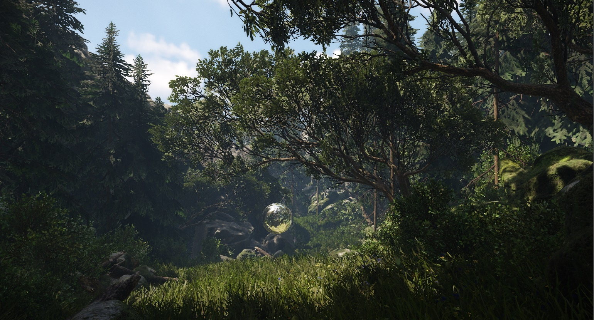
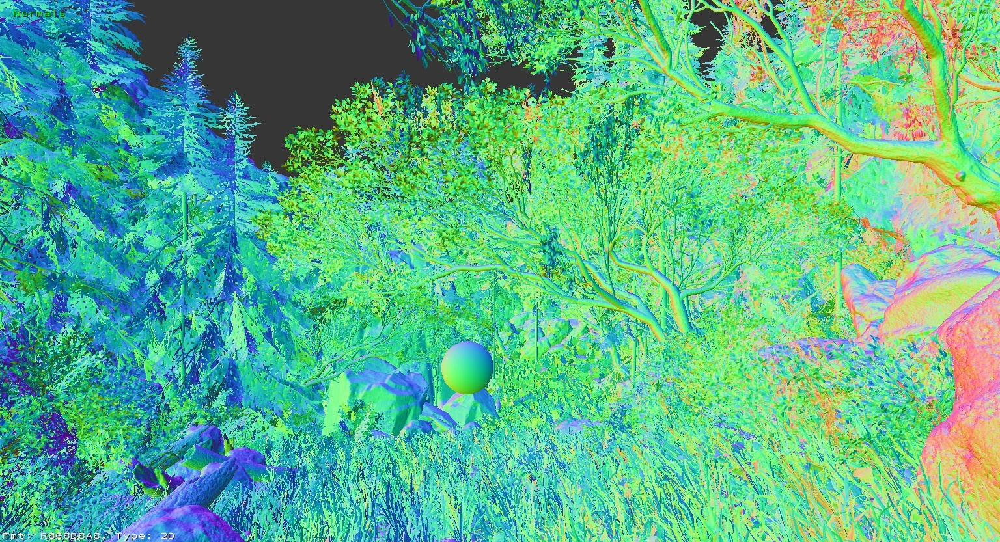
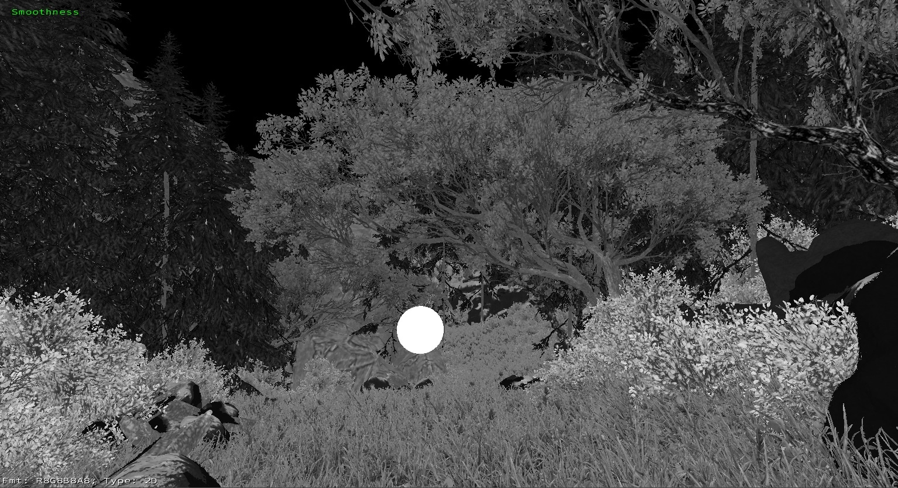
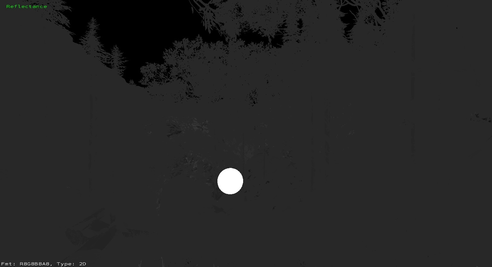
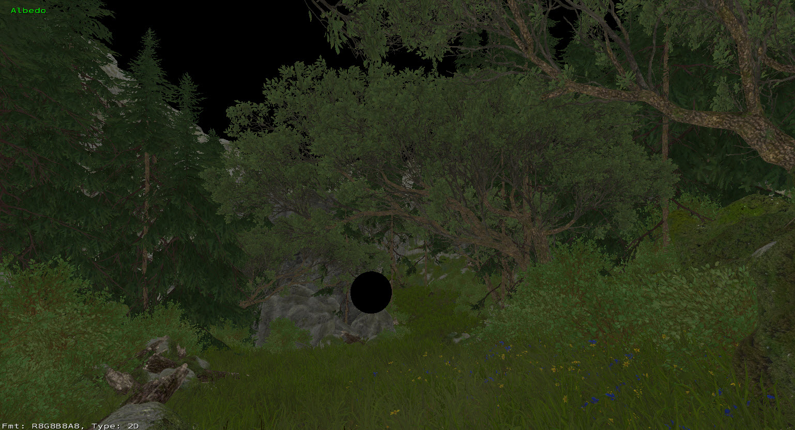
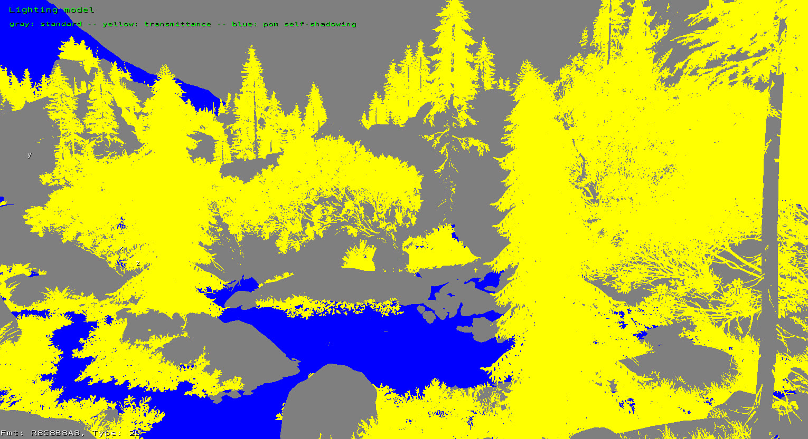
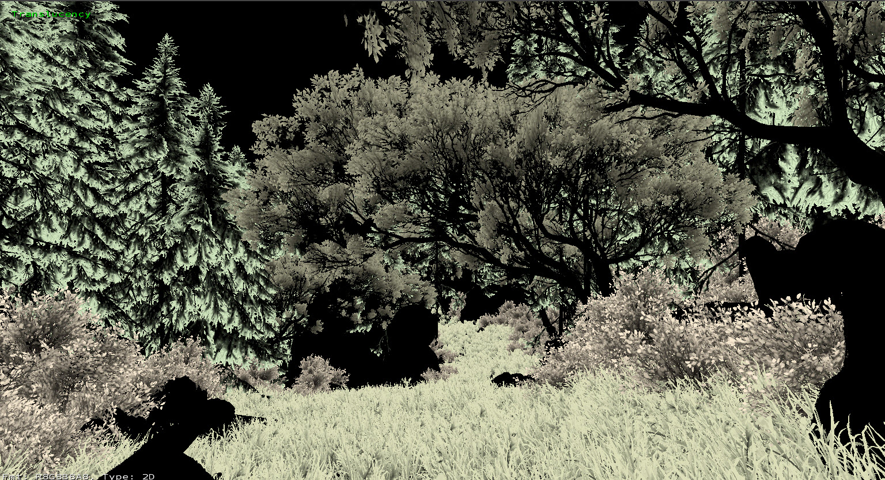
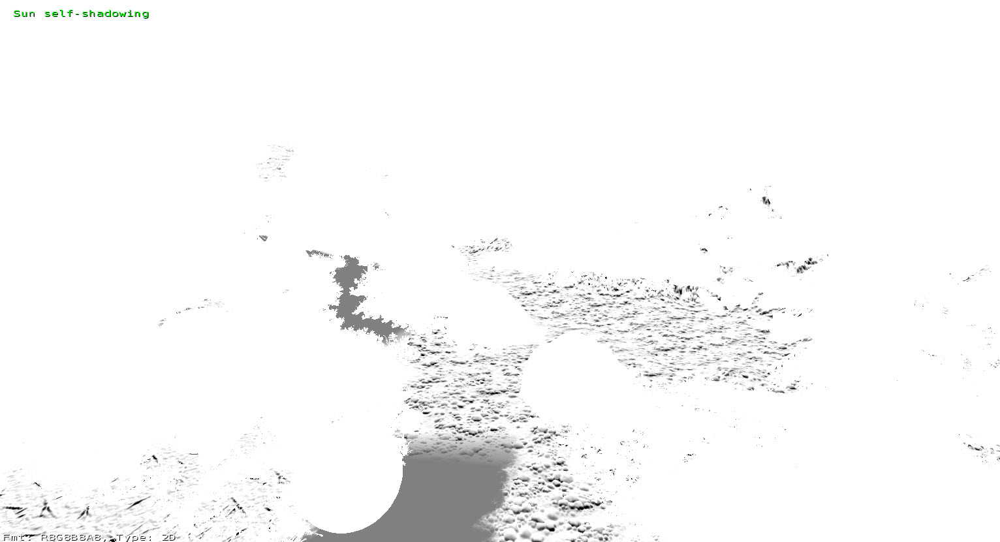
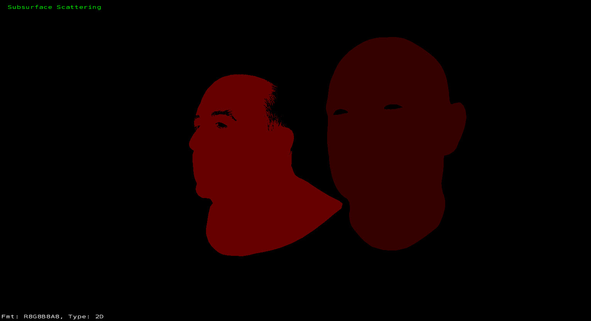
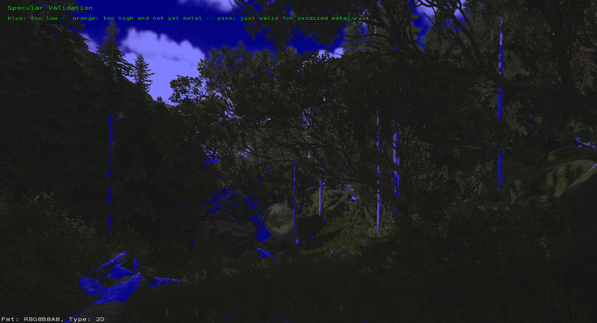

Introduction
With the introduction of Physically Based Shading (PBS) to CRYENGINE, it is important to adhere to how we configure our materials & textures to get the correct look & feel from every surface in the game.
To assist you during this process we have developed a set of debug views to investigate how your materials & textures are setup.
r_DebugGBuffer
This CVar has 9 modes that cover the specifics of the PBS render to ensure that you are configuring everything correctly.
r_DebugGBuffer = 0
Off, normal view mode.

r_DebugGBuffer = 1
Normals
Shows the world space normals of all assets in the scene.

r_DebugGBuffer = 2
Smoothness
This debug view shows how rough or glossy surfaces are. Note how the reflective sphere in the scene is pure white.
White = glossy, Black = rough

r_DebugGBuffer = 3
Reflectance
This represents the Specular color of the material.

Only materials using the Standard Lighting Model support colored reflectance. Materials with Transmittance or POM Self-shadowing, as well as Decals, just store monochrome surface reflectance.
r_DebugGBuffer = 4
Albedo
This shows the albedo of surfaces which was previously known as diffuse map.

r_DebugGBuffer = 5
Lighting Model
Grey - Standard, Yellow - Transmittance, Blue - POM Self shadowing
The Vegetation & HumanSkin shaders have the Transmittance properties active by default.

r_DebugGBuffer = 6
Translucency
Shows the translucency values set on assets in the scene. (Black = none).
This is controlled through the Transmittance color set in the materials shader params.

r_DebugGBuffer = 7
Sun Self Shadowing
Displays the self-shadowing of material that use Offset Bump mapping or Parallax Occlusion Mapping

r_DebugGBuffer = 8
Subsurface Scattering
Displays in red and yellow, any asset that uses SSS. The brighter the color, the higher the SSS index.
The SSS index can be set in Illum and the HumanSkin shader.

r_DebugGBuffer = 9
Specular Validation
This view helps you understand if your specular color is reasonable range.
- If your specular color is too low, it will be tinted Blue.
- If your specular color is too high for an dielectric surface but not yet in the metal range, it will be tinted Orange.
- Pink reveals colored specular which is not yet in the metal range. This is only valid for oxidized (rusted) metals.
